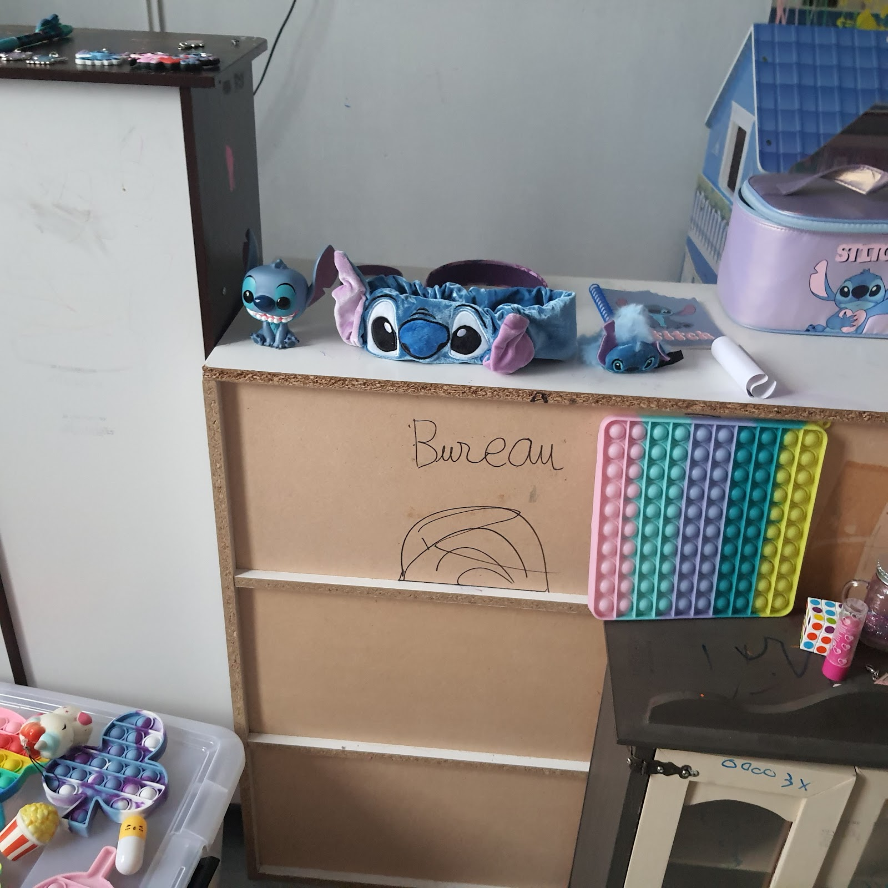

Chaque point
compte.
L'atelier denim qui coud comme hier, à deux pas de la Muette.
Sur commande. Sur mesure. Avec des machines qui ont un siècle. Ici, on ne « retouche » pas. On fabrique, on répare, on ajuste des jeans avec la même chaînetteuse Union Special qui équipait les ateliers d'Okayama. Made in Japan, fini à Paris XVIᵉ — pour ceux qui comptent les points au centimètre.
4.7/5 — 9 avis Google Prendre rendez-vous
Des machines qui ont de la mémoire
Installé rue Parent de Rosan, l'atelier Super Stitch, c'est d'abord un parc de machines à coudre historiques — Singer, Union Special, chaînetteuses japonaises — entretenues comme des instruments de musique. Chaque point d'ourlet est formé par un mécanisme centenaire, pas par un moteur sans âme.
La différence se voit au grain du fil, elle s'entend au bruit de l'aiguille, elle se sent quand tu passes le doigt sur une surpiqûre.
Ce qu'on fait (et ce qu'on ne fait pas)
Ourlet point de chaînette
La spécialité de la maison. L'ourlet original des jeans selvedge japonais, exécuté avec le fil et la machine qui vont bien — pas une imitation au point droit. Nos Union Special le font depuis 80 ans, elles continuent.
SpécialitéRetouches & ajustements denim
Rétrécissement de jambe sans toucher à la lisière, ajustement de taille, remplacement de rivets, réparation de déchirures avec pièces de renfort en coton japonais identique à l'original.
Sur mesureConfection sur commande
Un jean à tes mesures, coupé dans un denim selvedge japonais de 14 oz ou plus, monté entièrement à l'atelier. Compter 4 à 6 semaines, parce que les bonnes choses ne se bâclent pas.
ExclusifDenim japonais, selvedge, indigo brut
Nous travaillons exclusivement avec des toiles japonaises issues des filatures d'Okayama : denim selvedge à lisière rouge, indigo naturel ou synthétique selon les lots, poids de 12 à 18 oz. Chaque rouleau est contrôlé à réception.
Nous pouvons te conseiller sur le choix du grammage en fonction du tombé, de l'usage et de la saison.
Prendre rendez-vous au 11 rue Parent de Rosan
L'atelier est ouvert du mardi au samedi, de 10 h à 18 h, sur rendez-vous uniquement. Ça nous permet de te consacrer le temps qu'il faut — un essayage, un conseil, ça ne se fait pas en cinq minutes entre deux clients pressés.
4,7/5 — Ce que disent vos jeans (et leurs propriétaires)
@superstitch sur Instagram →
Super Stitch Paris
11 Rue Parent de Rosan, 75016 Paris
Ouvert mar–sam, 10 h – 18 h. Fermé dimanche et lundi.
info@superstitchmfg.com